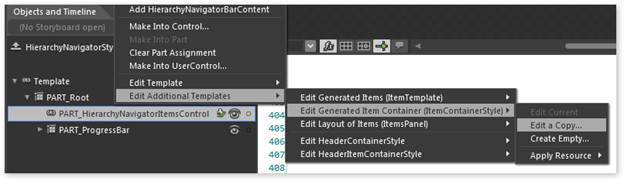
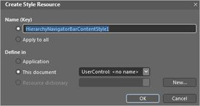

The steps to customize sample styles are as follows:
1. Add a HierarchyNavigator control to the new sample project
2. Add items. Refer Adding items to the HierarchyNavigator control.
|
XAML
xmlns:syncfusion="clr-namespace:Syncfusion.Windows.Tools.Controls;assembly=Syncfusion.Tools.Silverlight" |
|
XAML
<syncfusion:HierarchyNavigator x:Name="hierarchyNavigator1" Width="500" VerticalAlignment="Center" Style="{DynamicResource HierarchyNavigatorStyle1}"> <syncfusion:HierarchyNavigator.Items> <syncfusion:HierarchyNavigatorItem Content="Syncfusion"> <syncfusion:HierarchyNavigatorItem.Items> <syncfusion:HierarchyNavigatorItem Content="Silverlight"> <syncfusion:HierarchyNavigatorItem.Items> <syncfusion:HierarchyNavigatorItem Content="Tools"/> <syncfusion:HierarchyNavigatorItem Content="Grid"/> <syncfusion:HierarchyNavigatorItem Content="Chart"/> <syncfusion:HierarchyNavigatorItem Content="Gauge"/> <syncfusion:HierarchyNavigatorItem Content="Edit"/> <syncfusion:HierarchyNavigatorItem Content="Schedule"/> </syncfusion:HierarchyNavigatorItem.Items> </syncfusion:HierarchyNavigatorItem> <syncfusion:HierarchyNavigatorItem Content="WPF"/> </syncfusion:HierarchyNavigatorItem.Items> </syncfusion:HierarchyNavigatorItem> </syncfusion:HierarchyNavigator.Items> </syncfusion:HierarchyNavigator> |
ItemContainerStyle has been changed for the HierarchyNavigator control.
To steps to edit the styles are as follows:
3. Right-click the HierarchyNavigator control and select Edit Template, then select Edit Copy and type specify the style name for the HierarchyNavigator control. Then, edit the template as you require.
The following XAML is used for the HierarchyNavigator control’s main style.
4. Right-click the PART_HierarchyNavigatorItemsControl and select Edit Additional Templates, then select Edit Generated Item Container (ItemContainerStyle), and select Edit a Copy, to edit the item-container style.

Figure 598: Choose style to edit
5. In the Create Style Resource dialog box, type the style name.

Figure 599: Specify style name